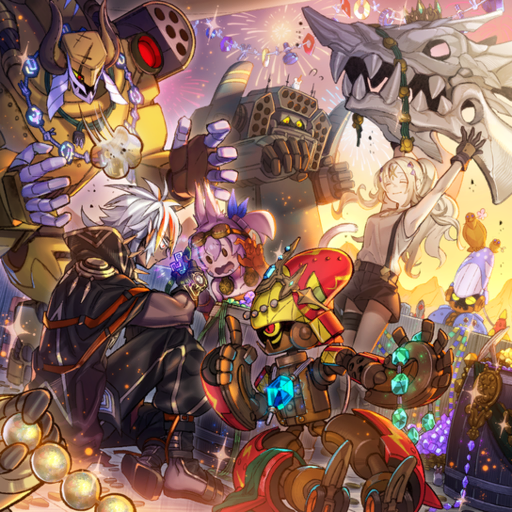
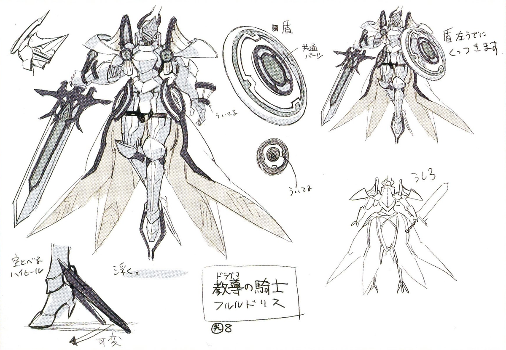

It is there that an ancient and giant interdimensional gate connecting to the abyss appears, known as 'Hole'.It is an ancient and massive gate to another dimension that occasionally appears. It can bring both disaster and blessings, like weapons or energy. People fight over its resources to survive.
Over the years, this has resulted in these residents aligning themselves with their own tribes or species, creating more and more nations and organizations, in a constant state of turmoil.
Beastmen tribes, once united, split due to conflicts over resources. Outcast youths, including 'The Featherless,' 'The Thieving Cat,' and 'The Fratricider,' formed a bond in exile. They gathered allies to fight the invading Dogmatika. Witnessing their unity, tribes put aside differences to unite against the invaders. A stoic general led the charge, inspiring with the might of war beasts.
The Volunteer Army, led by the "First Three," is a group formed to combat a common enemy, composed of exiled or shunned tribe members. They equip themselves with steel armaments to counter the holy tools of the enemy.
"Tri-Brigade Shuraig the Ominous Omen": Mockingly called
featherless, he leads the "Tri-Brigade" with few words but
relentless courage in battle, especially against the daring
"Fleurdelis."
"Tri-Brigade Rugal the Silver Sheller": Once a slayer
of his
own kind, he now serves as the Assault Captain, leading ground
forces and ensuring safety in retreats.
"Tri-Brigade Ferrijit the Barren Blossom" and "Tri-Brigade Kitt":
Ferrijit, spurned as a thieving cat, leads ground forces alongside
her younger sister Kitt, known for her eye-catching appearance and
dance-like battle style, earning her the nickname "Barren Blossom."
Seeking a new life, they left their homeland in search of a fresh ideal. Their journey led them to the "Great Golgonda Desert," where they encountered vast skies, endless sands, and a colossal monster. Wherever this creature roamed, the mysterious 'Hole' appeared frequently, releasing treasures and strange tools. Determined to surpass their past, the "Springans" embraced challenges to burn brighter. They merged with unearthed machines, filling each day with the sounds of clangs and explosions.
A lively treasure-hunter crew that rejoices from riding the giant warship "Exblowrer" on a voyage of sand, under the command of their big boss "Sargas". The henchmen "Brothers" live by the motto of living everyday as flashily as possible. To get the 'Number 1 Flashy Reward for the Day', they've been working hard to improve their coordination.
The Glorious Knights of Holy Teachings are an elite group in the Dogmatika Nation, empowered by holy stigmata and tasked with enforcing the 666 commandments of their scriptures. These stigmata grant special powers, referred to as miracles, which are used to combat heretics lacking holy stigmata, including beastmen and fairies. Two exceptionally powerful Virtuous Vestals, "Ecclesia" and "Fleurdelis," lead the nation to unprecedented prosperity with their miraculous abilities.
"Dogmatika Maximus": The supreme leader of "Dogmatika," bestows divine blessings of holy stigma using the divine sculpture "Nexus" before granting citizenship. "Dogmatika Ecclesia, the Virtuous": The first person in history with a holy stigma on her forehead, known as a 'Child of Miracles.' Her kindness and open-mindedness have won her widespread admiration. "Dogmatika Fleurdelis, the Knighted": Possesses holy stigmas on her limbs, granting immense physical strength and thunderstrike power. Protects both the nation and "Ecclesia" with these abilities and three holy relics. "Dogmatika Theo, the Iron Punch": Member of the close-quarters battle company under "Fleurdelis," wields an iron hammer with the ability to unleash devastating blows stored with power. "Dogmatika Adin, the Enlightened": Belongs to the support company of the 'Knights of Holy Teachings,' providing assistance through miraculous powers.
Excerpts from the 666 Commandments of the Dogmatika Holy Scriptures
1. Thou shalt not turn thy back on the holy teachings of
Maximus, for his magnificence is the agent of God
2. Thou shalt not utter the holy name of Maximus, for his
magnificence is the agent of God
3. Thou shalt not lay eyes on the holy visage of Maximus,
for his magnificence is the agent of God
4. Thou shalt not touch the holy personage of Maximus, for
his magnificence is the agent of God
5. Thou shalt not refuse a blessing by Maximus, for his
magnificence is the agent of God
6. Thou shalt not walk ahead of Maximus, for his magnificence
is the agent of God
7. Thou shalt not point at Maximus, for his magnificence is
the agent of God
66. Thou shalt have no mercy on the sinful heretics
67. Thou shalt have no fear in the face of the sinful heretics
68. Thou shalt lend no ear to the words of the sinful heretics
666. When the Day of Gospel arrives, thy holy stigma shall illuminate,
bringing all lost lambs back to Heaven,
as children of God once more
The "Tri-Brigade" launched a rescue mission to liberate their imprisoned allies from battles past. They breached the holy land of "Dogmatika", but the 'Hole' unleashed a powerful dragon. "Fleurdelis" swiftly defeated the dragon, yet a wounded youth was left behind where the creature vanished.
A black-cloaked boy who appeared after the dragon vanished. Upon witnessing his deep wounds and apparent lack of memories, the "Tri-Brigade" were reminded of their own past, and they decided to protect him.
Acting out of pure compassion, Ecclesia shielded the boy, an act which caused her to be denounced as a heretic who went against doctrine.
Ashiyan lashes out at Ecclesia and conjures a Hole that causes her to clutch at her Stigmata, apparently in great pain. The boy reacts by transforming into another dragon — Brigrand the Glory Dragon — and repels Ashiyan while protecting the unconscious Ecclesia. The Tri-Brigade also jumps into action, using the opportunity to extradite both her and the boy from the Dogmatika Nation.
Gaining the protection of "Tri-Brigade", the boy and girl managed to escape their dire situation. Warning them that there will be pursuers on their trail soon, "Shuraig" told the two of them they need to quickly leave the "Tri-Brigade" stronghold. On this unfamiliar journey, the two of them began to develop a bond ever so clumsily, eventually arriving at the "Great Sand Sea" and meeting the "Springans"
In a cruel twist of fate, the boy and girl had nowhere to go. Seeing the two of them reminded "Shuraig" and the others of their own past, when they were chased out by their own tribes and were on the verge of death. With no memories and incapable of trusting even himself, the young boy saw how the people before him treated even "Ecclesia", who was supposed to be their enemy, with kindness. And so, he developed his first sense of trust. Afterward, "Shuraig" entrusted the Mecha Shrike to the boy as proof of his identity.
As Ecclesia and Albaz approach a Springan hideout, they are mistaken for potential enemies and captured. Fortunately, Kitt recognizes Mercourier and vouches for them, at which point they are welcomed by the Springans.
They join Kitt and the Springans as they seek out the Holes that open throughout the desert, hunting for the treasures and technology that emerge from them.
They celebrate with the Springans after finding a cache of gems and jewels, while Ecclesia obtains the large skull of a dragon or serpent.

